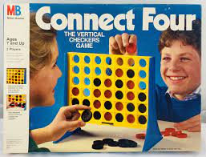
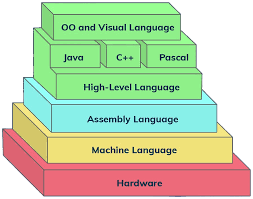

Computer Science student at Boston University
In Fall 2021, I took a Python programming course that delved into the basics of the Python language, object oriented programming, recursion, writing artificial intelligence code, and algorithm time analysis. I had a wonderful professor who made this class so enjoyable. I actually just wrote him a letter of reccomendation because he was asked to apply to be a professor on the tenure track at UC Berkeley, which is amazing! For our final project, we used object oriented programming to create a connect four game which had an AI player, it was so interesting! I still use Python very often for all of my math classes. In Fall 2022, I used Python a lot in my Linear Algebra course because we learned about Computer Graphics and how essentially all of it is just matrix manipulation that coordinates to objects being able to rotate and project onto a screen. I wrote code that made a ball rotate, which seems very simple, but it gave me a lot more experience in using all of the amazing math packages that Python has to offer.
Java is my personal favorite, although that is biased because I am a TA for a Java course at my school. I was first introduced to the Java programming languauge in Spring 2022. I took a Java course that went over the basis of Java, object oriented programming, recursive backtracking, sorting algorithms, algorithm time analysis, data structures, and computer memory. I fell in love with how interesting this course was. I excelled in the course, and the Professor then asked me to TA for it the following semester. I use Java essentially on a daily basis, and I am really thankful to be a TA for this course because it keeps me fresh on my toes on almost every topic that is brought up in coding interviews about algorithm efficency and the best way to implement code. I love teaching my students because while this course is very difficult, it teaches most of the fundamental computer science concepts that are so important to know as a software developer. It makes me so happy that I am able to introduce these kids to my personal favorite programming language and help them understand these fuundamental concepts that will help them immensley with their careers forever.
In Fall 2022, I was first introduced to Assembly Language. I took a course where we learned about what a computer actually is, and all of the back-end componets that allow writing code in an IDE to look so simple. To do this, we were asked to code in terminal the whole semester (aka-- no debugging). It was very challenging at first, but I am so thankful that I took this course because now I know so much more as a programmer. I now know the Von Neumann Architecture of a computer, how a CPU works, how all instructions are held in memory, and how at the end of the day, all of the fancy code that we write is just broken down into machine code so that the CPU can execute it. We then gradually moved to programming in C, which is also a very low-level language, but definetly a lot more advanced than Assembly Language. This course taught me so much more about the actual hardware of computers, and since we used Git and GitHub for this course to save all of our progress, it also made me extremely farmilar with Version Control.
Aspiring College Professor
Throughout my whole life, I have always had others tell me that I am the most hardworking person that they know. This has come from my fellow Computer Science friends at University, Professors, Teachers, and all of my friends and family. My work ethic is the thing that I love the most about myself, it has done such amazing wonders in my life. From high school to now, my work ethic is the reason for all of my success, and that will never change. If I put my mind to something, I can one hundred percent do it. Even more so with things that I am passionate about, such as Computer Science! I recently discovered that I have a true passion for teaching Computer Science, and I hope to do this for the rest of my life as I want to become a professor!
Besides Computer Science, my other hobbies include drawing, watercolor painting, playing the guitar, crocheting, fashion, and interior design!
In Python, I coded a Connect Four game that has an AI player that the user can play against. The main components that this program took advantage of are object oriented programming and recursive backtracking to allow the AI player to have a "look ahead" and be able to know what potential moves the human player will make before the human player actually makes them.
In Java, I coded a Letter Box solver that takes advantage of recursive backtracking to solve the New York Times Letter Box game. This is how LetterBoxed works: Letter Boxed takes place around, well, a box. There are three letters on each side, and players must connect them to make words at least three letters long. Letters on the same side cannot be used consecutively, and the final letter of each word becomes the first letter of the next word. In other words, it's pretty complicated and has a lot of rules. But, by using recursive backtracking, I was able to go through all combinations of letters that meet the requirements to be placed in a certain cell, continue forward if no rules of the game were broken, and move backwards and try a differnt combination of a rule was broken until I found a combination that won the game. This was very interesting to code and gave me a much better understanding of recursion and recursive backtracking.
In Assembly Language, I coded a "calculator" that was able to preform all of the functions that a basic four-function calculator can do. In addition, it was able to turn a String that was passed in as a parameter into all upper-case. This does not seem that hard, but all work was done through the registers of a CPU. This was a very challenging project, but it gave me a very good understanding of how local and global variables actually work in higher level languages such as Java and Python and how they all just get broken down into changing the values within registers and call instructions from memory to execute operations.
